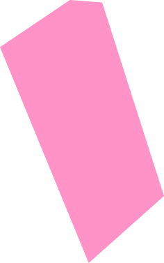

<section class="h-[64.208rem] max-w-[94.625rem] overflow-hidden flex relative items-end my-28">
<div class="max-h-[23.563rem] max-w-[14.75rem] absolute  top-6 right-[45%]">
    
</div>
<div class="max-h-[54.593rem] max-w-[45.375rem] absolute z-10 mb-16 top-0 ">
    
</div>
<div class="max-h-[26.125rem] max-w-[45.094rem] absolute z-20 mb-4   ">
    
</div>
<div class="max-h-[41.188rem] max-w-[44rem] z-50 absolute right-44  to ">
    
</div>
<div class="max-h-[33.75rem] max-w-[32.75rem] absolute ">
    
</div>

<div class="max-h-[48.531rem] max-w-[25.375rem] absolute right-0   -bottom-20   ">
    
</div>
</section>